Season 3
TML Community bids farewell to a very successful 3rd season
 |
|
Roddy receives his 'Scribe' award from Jon. |
Legends, Saturday 7th July. The ever growing Tokyo Metropolis League community, comprised of players from both divisions, referees, sponsors and supports, descended on Legends in Roppongi for the end of season party/award ceremony, On Saturday July 4th.
The evening kicked off with a sumptuous BBQ that many chose to wash down with one or two Vodka-Redbulls, followed by a Jägermeister or four, served by rubber-clad gals who claimed to be the official 'Jägermeister Girls', but those who had actually been to a Jägermeister sponsored event in the past, had their suspicions - perhaps it was the foreheads full of acne that initially roused suspicion. more...
JD.
The Great Escape
Oi Futo1, Saturday 17th June. YCAC vs WS Geckoes wrapped up TML 3 at Oi Futo on Saturday morning; YCAC running out comfortable winners. Though a poor run for YCAC in April had spoiled the organizers hopes of a last day title decider with the Hibs, there was still plenty at stake almost up until the last kick of the season.
The Geckoes, outgunned in the 1H and turning round 0-4 down, played the last 40 minutes of their season knowing that a 6 goal losing margin would see them and not KGFC relegated to Div2. more...
ST.
Unbeaten Jets Win League In Style
Todoroki, Sunday 11th June. The Saitama Jets wrapped up the Division Two title with a comfortable 4-1 win over a useful Shane side. The goals came from Keating, and, predictably, Loren, Gildart and Garner. There were other chances to add to the lead, but in rotten conditions, the Jets hot-shots were unable to take advantage.
Both teams entered the game with something to prove. Shane had a reputation for a mean defence, with only 8 goals conceded in 12 games. They had also held the Celts and Stoneds to draws in recent weeks, confirming that they are one of the strongest sides in the division. The Jets were champions-elect, and had the best goal-scoring record in Division Two with 41 goals from 12 games. In a battle between defence and attack, it was the penetrating thrust of the Jets which won out. more...
GG.
It's All 3's For Swiss.
 |
|
The gesture says it all after Angelo Foscoli scores Swiss' 2nd goal! |
Saitama Stadium, Saturday 10th June. They may have only taken third place in the league this season, but a 3-0 win sent Swiss kickers to a third successive Footy Japan Cup final Victory over France FC.
After a stalemate in the first half, last years TML Golden boot winner, Karl Hahne, scored one and set up another as the Swiss left no doubt as to who would take the Cup home again. This years TML top scorer, France's Etsushi Yoshikoshi, was kept quiet for most of the match under the watchful eye of Cap'n Kirk Neureiter.
The French skipper admitted they were out played by a Swiss side fielding 9 players different from their encounter 2 weeks ago. Ex manager/skipper Jos Van Der Valk, even made the tripo all the way from Amsterdam to be there to cheer them on! more ...
TML.
MAY 2006
Prelude to a Final?
Big Circus, Sunday 28th May. Having defeated both Sala FC and defending Champions BFC last week in the KUIS 7's tournament in Makuhari, France FC continued on their 'roll' by beating Swiss kickers in the latters final league match. Whether this will have any bearing on the FJ Cup final being played by the 2 teams on June 10th at Saitama Stadium is another matter but it will certainly give 2 time winners Swiss, cause for concern. This season sees Swiss finishing outside of the top 2 in the league for the first time in many years and with many of their players nearing their 'past due' date, it could be a dark omen for them. more from Swiss...
TML.
Hibernian Finish in Style.
 |
|
After landing on his head, Keita Narama is carried off by stretcher while a sympathetic Jesus & Jay look on! |
Hachioji Park, Saturday 27th May. Despite what the conspiracy theorists may hypothesise it is pace, skill and agility that has seen the Hibs have the wood of Sala in recent years. The Hibs front 2, wide midfielders and attacking midfielders are not afraid to pour forward in numbers and Sala’s big men at the back seem to have trouble keeping up. The same big men are so effective against the larger more bullocking style forwards. The Hibs 2005/6 style of attacking football has seen us average just under 4 goals a game and has been great fun to be involved with. Most teams in the league will have seen the Hibs ‘click’ and score 4 or 5 goals in a 10 - 20 minute period when we are very difficult to defend against. more ...
Bevan.
TARTAN ARMY CONQUER JAPAN
 |
|
Hibs' Yohei keeps the ball away from Tartan Army Captain Jimmy Black. |
Saitama Stadium, Sunday 14th May. Walking a well-trodden line between merriment and uproar the Scotland supporters club, better known as the ‘Tartan Army’, will depart Japan happy men, albeit it happy men in skirts.
The Scottish national team won the Kirin Cup competition with a 0-0 draw against Japan at Saitama Stadium on Saturday, 13th May (meaning some new silver wear in the trophy cabinet for the first time in 20-years) and the following evening, the Tartan Army representative team, well-known for their footballing exploits the world over, proved they too can play a bit.
Also held at the Saitama Stadium facility and arranged by Footy Japan Ltd. the Tartan Army team obliterated the Saitama Stadium residents’ team with a comfortable 3-0 win. Tokyo Hibernian FC, current champions of the Tokyo Metropolis League, proved a little more resilient however, putting four past the Scots without conceding. more ...
TML.
Playing for Pride!
Big Circus, Sunday 14th May. The Swiss and the Knights traveled to the Atsugi Big Circus (why is it called that?) for the late fixture on Sunday in one of the few remaining games of this season’s league. With the Hibs. already having claimed the trophy and the Knights already demoted, it was mostly for pride that both teams had gone 60 kilometers out of Tokyo to this patch amidst the onsens. Well, considering the prizes at stake in the TML championship, it is for pride every weekend. more ...
Cap'n Kirk.
The Road is Long, With Many a Winding Turn
(That leads me to who knows where, who knows where… Da da da da da da da daaaa)
Big Circus, Sunday 14th May. Just one left then.
The road to Big Circus (which isn’t big, but is usually full of clowns) winds up through attractive foothills, across dainty red bridges, along brooks of old from the banks of which wizened old men, little different from the trees around them, attempt to lure a trout with a tasty gnat.
Onwards, through hayfever inducing, rashly planned, government cedar plantations, past turn-offs so steep they induce vertigo in the weak of mind, and on which moss lies so thick, as to suggest that no car has ever braved them. The journey ends suddenly, on a quiet, flat stretch of road overlooking a wide valley which is dominated by a giant carbuncle of a cement factory, billowing dust and smoke into the sweaty dusk air. A dog barks pointlessly, straining at his chain in the garden of the small pre-fab house opposite the taxi. more ...
RC.
 |
|
Brian Gallagher, who got the only goal of the match, showed good form on the day. |
Sala Likened to “Jack in the box with no spring” by Nearby Man!
Hachioji Park, Sunday 7th May. The story, it is said, is in the telling. So you can probably write this one off as five minutes of your life wasted. How to put into words a thoroughly unemotional, unremarkable and quite damp game of football…?
Gallagher showed up wearing questionable beads (“They’re nuts!”) of Hawaiian origin, Shigeru decided he couldn’t be bothered playing, and Toby chose the worst day of the season (weather wise) to come and watch.
Shogun Knights (nee Nova FC) have had quite a time of it of late, losing 8-1 to a merciless BFC and only narrowly losing to champions Hibs. Their squad features a couple of ex-Sala henchmen and games between the two generally lack the bite of certain other fixtures on the TML calendar. Sala were not in the mood to totally extend the hand of friendship however. Olive branches left in the locker room, Sala took to the field with a very unusual line up, knowing that the Swiss are still there to be overhauled, should they slip up. more ...
RC.
Gav Grabs Winner in Clash of Titans.
OiFuto, Friday 5th May. The packed crowd of 28 there to witness the TML inauguration of the excellent new long blade astro field at Oi Futo No. 2. were treated to a pulsating fixture that featured end to end action of exciting, intense football of high quality. In previous seasons the Hibs and YCAC had a reputation for being bruising small pitch specialists; but this season they have developed into the 2 most entertaining teams in the TML; eschewing the long ball game and building attacks from the back and able to hold possession for long periods. With the league decided this was crucial to YCAC’s chance to clinch 2nd place and for both teams to claim boasting rights. more ...
BC.
April 2006
Woodwork Helps France to FJ Final
Hachioji Park, Sun 30th April. After scoring at both ends and hitting the post/bar 4 times in normal time, Sala hit the woodwork with their first penalty in a shootout that resulted in France FC going to the Final of the FJ Cup, facing Swiss kickers at Saitama Stadium (sub ground) on June 10th. more ...
FJ.
YCAC Back to Winning Ways.
Big Circus, Sat 22nd April. YCAC got back to winning ways with a comfortable 4-1 victory over the French at Big Circus on Saturday night. Six thirty KO on a saturday seems like a plan particularly when it sometimes appears that 1/2 your team doesn't own an alarm clock but in reality it just gives team management a whole days headache putting together a team instead of the usual hour or so panic before KO more ...
ST.
Swiss Looking to Make it 3 in a Row
Hachioji Park, Sat 15th April. Swiss Kickers beat YC&AC 1-0 agian, the 2nd time in a week to go through to their third straight Footy Japan Cup final. Having beaten them in the league, finishing YCAC's hopes of catching Hibs for the title, Swiss repeated the scoreline to knock them out of the cup. more ...
FJ.
Clash Hold Celts Leaving Jets on Top.
 |
|
Final game for Eugene Beattie. |
Misato, Sun 9th April. The Celts Div 2 title challenge came to a disappointing end at windy Misato, when they were held to a 1-1 draw by the Clash.
Despite missing 6 regular first team players the Celts started well, passing the ball around nicely, with chances being created for Oli and Neil up front. The back four were pretty solid, the only difficulty being the strong wind making it hard to judge how far the ball was going to carry. more ...
Celts had their final team talk from Eugene "jinky" Beattie on his farewell appearance for the Celts. We'll miss those teamtalks!! Thanks for the years of service and best of luck for the future Eugene.
RH.
Geckoes Come Back to Bag the Points
| 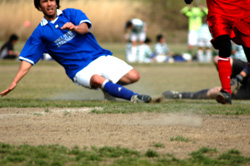 |
|
Andy Drought slides home the winner for Geckoes. |
Misato, Sun 9th April. What is it about WSG that they have to go a goal down before they snap into action? A sweetly struck half volley in the 5th minute from Jetro's Nakase woke the Geckoes sharply from their slumbers. more ...
GS.
Swiss Hand Hibs Title with Win over YCAC.
YC&AC, Sat 8th April. Nice day for a game, unfortunately it was at YCAC which is getting bumpier by the day but I guess we have to be grateful for any pitch we can get.
About the match, it really wasn’t much of one to tell the truth. There was a lot of huffing and screaming at the referee from both sides and very little skill on display as a result of the poor conditions. more ...
Cap'n Kirk.
See all the photos from the Charity 6's in 2 large galleries, CLICK HERE
 |
|
BEFC striker Silvinho puts the pressure on. |
British Embassy End Shane Promotion Hopes.
YC&AC, Sun 2nd April. British Embassy eased to a 2-0 victory over promotion chasing Shane FC at YCAC on a rain swept Sunday to extend their unbeaten record to 4 games.
A foul 20 yards out from goal allowed Reds midfielder Masa to curl-in a gem of a free kick over the Shane wall and into the bottom right corner of the goal after 25 minutes.
The lacklustre Shane were further punished when Embassy midfielder Satoshi pounced on an error by the Shane keeper after he spilled a shot from Kotaro on 70 minutes to effectively finish this game off as a contest. more ...
Blip Pilot.
 |
|
Goal scorer Katase braves the fists of Taylor. |
Knights No Pushover.
YC&AC, Sun 2nd April. We had done the sums and worked out that if the Hibs won this game and the YCAC drew or lost against the Swiss or France FC; the 3rd TML championship would be heading from Swiss’ HQ at Bernd’s bar, back with the Hibs to Paddy Foley’s.
For this fixture against the Shogun Knights at the YCAC the wind was blowing strongly (as usual) and the pitch seems to getting bumpier each week. At Tokyo Hibernian we wholeheartedly endorse the Swiss’ plea for the new Astro pitch at the YCAC to be built to full size; (I reckon most of us clumsy bruisers in the TML will have no problem running 10 yards in stead of 5 to challenge an opposition player blessed with more than his fair share of skill – the extra exercise will do us the world of good!). more ...
BC.
Jets Scrape Draw, Win Promotion.
|
Clash goal scorers Sam & Michael linking up. |
YC&AC, Sun 2nd April. The Saitama Jets finally won promotion to Division 1 in their third TML season, after playing out a tight 3-3 draw with the Wall Street Clash. The team from Saitama were not at their best against a tough Clash side, but showed their determination by getting back into the game after being behind three times. Both teams had chances to win it at the end, but veteran strikers on both sides lacked the composure to grab a late winner.
The Jets form has been somewhat sporadic in recent weeks, and the fluid attacking play of earlier in the season has been missing. However poorly the team has played, with Gildart and Loren around, goals are always likely. So, lining up for the first time this season with neither of our main goalscorers was a concern. Playing with the wind in the first half, the Jets tended to overhit balls through to Mike Passmore and Mark Eite, and despite having a lot of the ball, we were struggling to create clear chances. The Clash were tidy in midfield, and generally making a better job of playing into the wind than the Jets were of playing with the supposed advantage.more ...
GG.
Sala Edge Hungry Geckoes.
 |
|
Lenny gets a helping hand while Shige looks on. |
OiFuto, Sat 1st April. Controversy, controversy, controversy. While there was little of that in a terse encounter at Oifuto last Saturday, Sala and in particular TML linchpin Sid Lloyd (Age withheld) have been the subject of many a nasty rumour recently, founded no doubt over a jar or eighteen of premium strength imported lager in one or other of Tokyo’s more puritan nightspots.
Rumours relating to Sala’s ability to beat some teams and inability to beat certain others, have led to a Sid Lloyd/Sala/Hibs conspiracy theory that has recently only been rivalled by the Turkish newspaper which claimed that America caused the South-East Asian earthquake and subsequent tsunami by means of an underwater nuclear test gone wrong.
Sala are deeply hurt by such rumours and will certainly be bringing them to the fore during next week’s annual Sid Lloyd/Sala/Hibs League Rigging Conference to be held at Sala Bar (Dress: Smart/casual, 2000 yen entry, one free drink, riff-raff unwelcome)
more ...
RC.
 |
|
KGFC striker Suwa fires in a shot past Swiss' Kai. |
Space to Play.
OiFuto, Sat 1st April. Today was a testament to true football grounds. Instead of playing on the kids size cabbage patch at YCAC or St. Mary’s, where a football game is less likely to be seen than a life-size pinball game, the spacious ground at Oifuto (even the dirt) was a delightful change for the best. The ability to find players in space, to put the ball on the ground and run with it, to connect 4-5 passes without a bobble or even a knee high bounce, what a joy!
Oh, do I hope the designers of YCAC’s new ground see the light (or anything resembling the real dimensions of a footy pitch) and decide to make it regulation size. Will the TML be forced to play on a kiddie ground all next year... more ...
Kirk.
March 2006
 |
|
Shigeru Chino fires in a ball for Sala. |
Sala Snuff YCAC Title Hopes.
YC&AC, Sat 25th March. A solid display by Sala on Saturday left any lingering YCAC title aspirations in tatters.
A clear blue sky tempered only by the gallons of filth pumped into the atmosphere from nearby factories set both teams in good stead. Sala have still yet to lose to YCAC in the TML and they felt confident enough of taking at least a point back to Chiba.
Both teams fielded under strength sides, Sala managing to piece together a paltry 12 players for such an important game.
In the first half, Sala looked the livelier of the two teams. Toby headed at the keeper when well placed and then hit the post with a low drive from 20 yards out. more ...
RC.
 |
|
Scorers Yasu Yomota & Mark Kouyias battle for the ball. |
Almost There!
Todoroki, Sun 26th March. Considering the matches between the Hibs and Sala always contain a fair amount of bite (and spite), Sala have made a habit of doing us favours in their other matches. They handed us the first TML title by beating the Swiss in the final game and their two victories over the YCAC have made things much easier for us this time.
Despite the history of Ireland and England and both Tokyo based clubs having played many lively matches in Tokyo over the past 20 years; contests between the BFC and the Hibs have been played in very good spirit over the last few years and bar a few contested offside decisions; this game was no exception. more ...
BC.
JETs Back on Top
Hachioji Park, Sat 25th March. After boasting last week that the Saitama Jets are the best team in Division 2, this writer will be the first to admit that they didn't show it against Santos. The Jets eventually ran out 3-1 winners, but Santos bossed the game for long periods, and with better finishing, they would have put the game out of the reach of the Saitama team by half-time. more ...
RW.
| 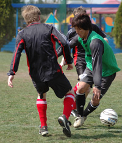 |
|
Tournament MVP, Kazu Matsumoto, weaves his way around 'Schoolby Errors'. |
SCORING BIG FOR UNICEF
YC&AC, Tuesday 21st March. 22 teams (6 more teams than took part in the inaugural tournament a year ago) took part in the 2nd Footy Japan / YC&AC Charity 6’s, held at YC&AC on March 21st.
Many of the teams involved in this tournament were simultaneously raising urgently needed funds for UNICEF, to aid their ongoing plight of helping children in need throughout the world.
For many of the players the impetus to play hard and shoot-on-sight came from the fact that some of the event sponsors were pledging generous contributions on a per-goal-scored basis.
The culmination of a fantastic day of football saw a total of 81-goals scored and the princely sum of 560,000JPY raised for UNICEF more ...
FJ.
Shane Stay in Chase for Promotion.
Mitsuike Koen, Sun 19th March. Shane FC belied their reputation as the meanest defence in Division Two by conceding three in their encounter with the Dutch Embassy. That was one more than they had hitherto let in all season. Just to show that this was a day in which past precedent would be no guide, Shane, usually shy in front of goal, helped themselves to six goals to keep their faint hopes of a promotion place alive. Yet for all the thrills and spills in front of goal this was no classic. more ...
RW.
BFC Finding Their Way.
Todoroki, Sun 19th March. Move over Roman Abramovich and Jose Mourinho. BFC's most expensively assembled squad ever (approx JPY8,000 including taxis to and from the ground and the charge of JPY300 per person to use the showers after the game) took the field on a cold and windy Sunday evening against France FC at Todoroki Soccer Ground. With 7 first team squad players already missing through injury and other commitments, three additional call offs on the day was not the perfect preparation for this match. With no expense spared, replacement players were found following a flurry of emails, phone calls, smoke signals, emergency SOS messages from Brian, Jon and Phil, in a move that is widely predicted to ensure a dramatic improvement in NTT Docomo's 2nd quarter results. more ...
BD.
Clash Happy to Share points Again.
| 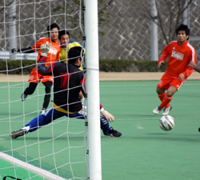 |
|
Dutch keeper gets his foot to a cross in windy conditons. |
Big Circus, Sun 12th March. Big Circus was the name of the ground and Big Circus was the manner of play last Sunday between Wall Street Clash and Dutch Embassy (ringers included). With the ground situated atop a small mountain in Hon-Atsugi and strong winds blowing the match was reminiscent of those joyful 8am kickoffs as a 9yr old when you’d kick a rubber/plastic compound ball in the air to see it sail back over your head.
Add to these conditions the extremely bouncy nature of the astro turf to the incredibly bouncy nature of the football and there was less of the ball sticking to feet than a lean steak to teflon cookery. Drop some ‘talent’ from Division Two into the mix and all the ingredients were there for a thoroughly enjoyable display of ping-pong football. more ...
Gaffa.
YCAC Keep Pressure On Hibs.
YC&AC, Sun 12th March. Second half goals from Anthony Savage and skipper Joe Takeda gave YCAC a hard won victory over a resolute and skilfull KGFC side on Sunday. Credit to both teams for putting on a decent show in difficult conditions. The problems of playing football on a hard and bumpy pitch were compounded by a strong gusting wind. Just to rub it in the 2 elements even joined forces occasionally; the wind lifting up the top surface and hurling it spitefully into the players faces. more ...
ST.
Shane Give Celts the Edge in Promotion Battle.
| 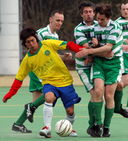 |
|
It was all a bit tight in the Div 2 match between Celts & Shane. |
Big Circus, Sun 12th March. In the end a disappointing result for the Celts in a game where they dominated posession and chances. Despite playing all the football and creating several chances, a killer instinct was lacking when it counted.
In terms of promotion probably a worse result for Shane, as they now need to win all of their remaining games and hope that the Celts slip up against the Clash in the final game. The main beneficiaries were the Jets, who know now that if they avoid defeat against Shane, they're pretty much home and dry for winning the league. more from Celts ...
RH.
A windy afternoon in the mountains near Hon Atsugi saw Shane take on the high flying Kanto Celts. With player manager Riaz Donaldson and 3 other regulars missing it was a make shift team that Shane fielded which included a couple of debuts. Big Circus however seemed an appropriate venue for The Celts considering the size of their squad and management. more from Shane FC ...
PM.
Jets Romp On!
YC&AC, Sun 12th March. A Ryan Loren double helped the Saitama Jets continue their relentless march towards the first division with an efficient, if far from spectacular, 4-0 win over the YCAC 2nds. On a bumpy pitch, with a gale-force wind blowing, this was not a game for the football purist, but Loren's two first-half goals were complemented by Chris Piper's first league goal and an unbelievable own goal to give the Jets a comfortable victory. more ...
GG.
Geckoes Send France Another Blow.
Hachioji Park, Sat 11th March. Eight goals were shared by two teams made up of predominantly English and French players, as The Geckoes ran out 5-3 winners over fourth placed France F.C, at Hachioji park on Saturday afternoon.
The first goal was scored by the French number 14; Etsushi Yoshikoshi, who received a skillfully chipped ball from number 6 on the right side of midfield. New Geckoe defender Nat' was left isolated as he lost the chase to the ball and the lanky striker duely opened the scoring, taking his tally to 14 for the season. more ...
No8.
Gallagher's Late Show Steals Some Solace For Sala.
 |
|
'Shall we Dance?" Swiss & Sala were up for it! |
YC&AC, Sat 11th March. A draw can feel like a win. A draw can feel like a loss, and just sometimes, a draw can feel like an em…draw…um…or something…
Irrespective of the conditions, the quality of the opposition, or the performance of the officials, the factor that most decides how a draw feels (They have feelings too you know), is the order that the goals are scored in.
The Swiss will doubtless feel that they should have come away with a win from this one, leading as they did from shortly after half time, until within spitting distance of the finish line.
But for Sala, their last minute equaliser felt thoroughly deserved, and was a pleasing way to end a game that hopefully won’t linger long in the memory. more ...
RC.
TML/YC&AC Member in North Pole Charity Expedition for Homeless Children.
YC&AC, February. In April Kevin Morgan, from Northern Ireland and a member of the YC&AC first soccer team, will attempt a 70 mile cross-country skiing expedition to the North Pole in order to raise funds for a charity helping homeless children.
Kevins teammates at YCAC have undertaken to match Yen for Yen any money raised by other TML members more ...
TML.
Hibs & France in 13 Goal Thriller.
| 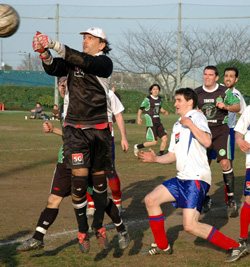 |
|
French keeper Emmanuel Perrin was under a barrage of Hibs pressure during their goalfest |
YC&AC, Sun 5th March. Funny game football. After two losses and a draw the words 'Hibs' and 'Slump' were being used together in certain circles. However those in the know were aware that the Hibs still had quality players in all areas and had been extremely unlucky recently and had wedged a Hasaki champions league tournament win in between their poor TML results. Those same people in the know had faith that we would come up with a good result given some luck. more ...
BC.
Bitter-Sweet Thirteen
YC&AC, Sun 5th March. Well. Let's forget the basic report for that game and try to find proper adjectives for this "funny" football game.
Musical
1st Half : charge of the Valkyries.
2nd Half : French cancan. more ...
Manu.
Clash no Match for Stoneds..
YC&AC, Sun 5th March. An advertisement on the TML website reads 'Refs wanted; Can you control 22 noisey (sic) sweaty duffers on a weekend?'. 22 is a number harsh on some teams with Stoneds FC being one of them but the Clash certainly try to provide their quota. Unfortunately the noise that most of them provide is not used to help communicate effectively and today was a prime example of that. The referee at YCAC today had to talk to a few of the Clash players about their colourful language in the presence of children. The quieter side lacked duffers and hardly broke into a sweat as they came out 3-1 winners. more ...
CA.
 |
|
Celts Keeper Aki saves Yan's PK only to see him score the rebound. |
Celts Stretch Lead.
YC&AC, Sun 5th March. Kanto Celts won their 10th straight league game with a 4-1 demolition of the Dutch Embassy at a sunny YCAC.
After a slow start, the Celts gradually began to take control and took the lead midway through the half when Adam fired in a cross from the left, Soh lept, chested down and finished into the bottom right hand corner. Less than 5 minutes later it was 2, and an even better goal. Dermot knocked down and Soh smacked a beautiful half-volley past the despairing dive of the Dutch keeper. more ...
RH.
 |
|
Celts Keeper Aki saves Yan's PK only to see him score the rebound. |
Swiss Scrape by Geckoes.
YC&AC, Sat 4th March. On a beautiful day at YCAC, with the Swiss feeling confident following their 2nd win in a row vs. over the Hibs., the Geckoes came to play. More changes to the Swiss lineup meant a lot of uncertainty but the team was hopeful that there was enough quality. For the Geckoes, in spite of being without their captain (who felt that the snow was more appealing than kicking some Swiss), they looked to have their normal squad out. The Geckoes are a solid team with a physical style of play that is compounded on the kids pitch at YCAC but it is something that everyone has to deal with these days. more ...
Kirk.
Sala Edge Wily KGFC.
 |
|
Big Steve Hubert makes his presence felt. |
YC&AC, Sat 4th March. Although the KGFC captain may now want to retract certain comments made at last years award ceremonies, concerning more silverware being lifted by him this year, KGFC have certainly impressed during their first season in division one. And though that stay seems set to end rather sooner than later with the club languishing in the lower reaches of the league table, their ‘unique’ style of play will surely see them back again sometime.
On Saturday at YCAC, Sala ran the whole gambit of emotions, from indifference to apathy, as KGFC got up to their usual tricks and partially succeeded in riling Sala’s not insignificant population of hotheads.
It was also evident that the official in charge was of the belief that as long as a team doesn’t verbally complain, then they are playing fair, which is certainly not always the case. But these are issues aside and pub team managers across the globe shall forever go to bed cursing referees and opponents with equal measure regardless of result or circumstance. more ...
RC.
February 2006
Everything to Play for at the Top.
Hachioji Park, Sat 25th February. A scheduling misdemeanor by the league office produced back to back matches for the Swiss and the Hibs. One week after squeaking by the Hibs. 1-0 in a Cup battle at YCAC, Sid sent us to the darker side of Tokyo to see what would happen on the turf. Both teams had to deal with numerous player changes due to injuries/absences from the previous match but the Hibs. did see a return of their enormous captain from suspension. more from Swiss ...
KN.
This was a very important league game with the end of the season approaching quickly. The Hibs dominated the early exchanges and missed a few chances early more from Hibs ...
BC.
YCAC 2nds Bounce Higher.
YC&AC, Sun 19th February. In many ways it has been a frustrating season in the TML for YCAC 2nd - rarely turned over, but we have drawn with teams we could have beaten and lost by the odd goal when a draw might have been a fairer result. So a nice change for us to record a solid win. more ...
SM.
Shaky Sala Scrape Past BFC.
Hachioji Park, Sat 18th February. Advocators of football as art suffered a heavy moral defeat on Saturday, as Sala edged a tense encounter in Saitama. BFC just couldn’t find a way past an obstinate Sala back line, and so an early second half goal against the run of play, helped Sala to a first win over the British since the last game of last season. more ...
RC.
| 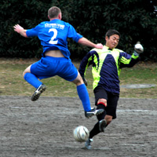 |
|
Nate Gildart challenges the Stoneds keeper. |
Goal Rush!
OiFuto 1, Sat 18th February. In a battle between two of the top sides in Division 2, second-placed Saitama Jets overcame third-placed Stoneds in a 5-4 thriller. Going into the game, these two sides were the highest-scorers in the division, so it would have been a brave man who predicted a low-scoring game. As it was, the Jets coasted into a 5-2 lead in the second half before falling asleep and conceding two in a hectic last few minutes.
Watching the Celts fluke their way past the Barbarians in the previous game meant that this was again a game the Jets had to win (just kidding, hooped fellas!) more ...
RH.
Celts Continue Charge.
| 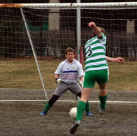 |
|
Neill Blondell fires in Celts 2nd goal vs Barbarians. |
OiFuto 1, Sat 18th February. The Celts kept up their relentless charge towards division 1, with a 9th straight victory in the league. Indeed since the horror show opening 20 minutes in the very first game of the season V Jets, when 4 goals were let in, the Celts have conceded only 5 more goals in over 9 and a half games.
Barbarians v Celts games are always keenly fought, and the Barbs seemed well up for it judging by the mini-army of players they brought along. The Celts, for the second game running suffering late withdrawals of key players, nervously awaited the arrival of 2 players who committed the schoolboy error of getting on the express monorail to Haneda.
The opening exchanges were tight, the only chance coming when Magoo struck a shot that was well saved by Fred in the Barbs goal.
more ...
RH.
 |
|
Clash Skipper Ian Webster goes in for the challenge. |
Shane Come Good in Gale.
Misato, Sun 12th February. An informed neutral contemplating this fixture might have predicted the decisive protagonists would be the talented and physically intimidating Shane no. 11, or the Clash debutante libero Nori.
While both acquitted themselves with distinction, the decisive factor came from an unexpected quarter – the elements.
Gale-force winds swept across the open expanses of Misato forcing both sides to adjust their tactics towards the conditions rather than each other. Flying in the face of received wisdom, each half was dominated by the team playing into the wind.
Shane’s mid-table position belied their potential as champions of this league. With a few games-in-hand on league-leaders Kanto Celts, more ...
Count Zero.
 |
|
Ben Cliffe shivers in the cold wind as he dribbles the ball. |
Celts Regain Top Spot.
Misato, Sun 12th February. At a blustery, to say the least, Misato, the Kanto Celts moved back on top of the league with a 2-0 win over Maritzio.
The Celts lacked a few regulars but the boys who came along gave it everything.
John Conama in goal was solid, and a vital save just before the end of the first half swung things for the Celts. more ...
DJ.
Level-headed Lowes has the Last Laugh.
YC&AC, Sun 12th February. After back-to-back draws, BFC were looking to build on their solid if unspectacular start to 2006 with a first victory of the year. Away to a good YCAC side, harboring distant but achievable title aspirations, this was never going be easy, and so it proved. After a hard
fought 80 minutes, in which the YCAC crowds were treated to a classic game of bruising long ball action, BFC walked away with a deserved point. more ...
JM.
 |
|
James Absolom challenges BFC keeper 'Beef' Jyrki in their clash at YC&AC. |
BFC hold YCAC with last gasp penalty.
YC&AC, Sun 12th February. High noon. A group of locals beat the ground repeatedly with their sticks, the oncoming attack from another tribe being greeted with a cloud of dust as the stick beating gathers momentum. A scene from Zulu? No, it's the YCAC hockey team knocking seven bells out of the pitch before the YCAC 1st XI take on BFC. more ...
GM.
France Advance on Top 2.
Katsushika, Sun 12th February. A bright and sunny typical Japanese morning saw the return leg of Jetro vs France FC at 9 am on Katsushika dirt pitch. The French had their typical lineup apart from two key midfielders missing and their 3rd different keeper between the posts in two games! more ...
Manu.
 |
|
Stand-in French keeper Francois watches the flight of the cross as the well dressed Sala strikers press forward! |
Another Blow for Knights.
Misato, Sun 5th February. Sunday saw a record turn out for the Knights (15 players and 3 very cold supporters) on a blustery day in Misato hoping to see our season high, one game winning streak, extended further.
The match started off with KGFC keeping the ball on the ground, which allowed them to keep control for long periods of time. They had a few chances but they were all thwarted by the stellar keeping of Mr. Mignon and a couple of clearances from his stoic defenders. more ...
DJ.
Vagabonds Come from Behind to Record 2nd Win.
Hachioji Park, Sat 4th February. To paraphrase Lindsey, if the last few performances were Middlesborough, then this one was certainly more Jupiter than Beijing. more ...
RC.
On Saturday afternoon,Vagabonds recorded their first real win of the season.(The first was by default when the opposition didn't muster enough troops )
In a six pointer against fellow strugglers Copel F.C. a game of fluctuating fortunes finally went the Vags way. more ...
AT.
Sacré Blue...?
| 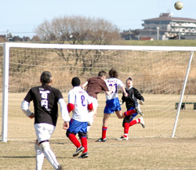 |
|
Stand-in French keeper Francois watches the flight of the cross as the well dressed Sala strikers press forward! |
Misato, Sun 5th February. France FC's pre-game strip-changing chicanery left Sala looking like a bunch of vagrants and playing like they'd spent the night drinking aftershave under a railway bridge, as they ran out 3v1 winners on Sunday at Misato.
France turned up in a shiny new white strip, as opposed to their regular blue, quite without warning, leaving the two teams to jan-ken for the right to wear white. Typically, Sala lost, and were forced to take to the field wearing a motley assortment of t-shirts and jackets.
Sala shrugged off this affliction though, to start the more brightly of the two teams more...
RC.
Jets Squeeze Past Combative Maritizio
Hachioji Park, Sat 4th February. The Saitama Jets returned to the top of Division 2 with a hard-fought win over a tough Maritizio side at Hachioji Park.
Sloppy second-half finishing from Mark Eite and Nate Gildart made this a closer game than it needed to be, and the Jets even had to ride their luck a little towards the end as Maritizio hit the bar and striker Vernon Gill blazed over. more ...
GG.
Geckoes Thwarted by Plucky Hibs.
YC&AC, Sat 4th February. The Geckoes knew this was going to be a tricky fixture against the Hibs. A windy day, a bumpy pitch, a scrapping, mouthy, physical opposition with a point to prove coming off a two week break and the entire Geckoes defence being unavailable due to a number of reasons (none of them believable), thus ensuring that the Geckoes back four included two central midfielders, a right back playing on the left and a debutant on the bench. more...
WSG.
Geckoes Steal Points From Hibs.
YC&AC, Sat 4th February. The Hibs knew this was going to be a tricky fixture against the Geckoes. A windy day, a bumpy pitch, a scrapping, physical opposition with a point to prove coming off a (reportedly) unlucky loss and talismanic keeper Hitoshi in the U.S. Against the Geckoes, this was about as dangerous as it could get. more ...
BC.
January 2006
Geezer Gav Makes His Mark.
YC&AC, Sun 29th January. YCAC Dressing Room. 20 minutes to KO.
The suddenly tough to beat Jetro are a big red machine with its motor beginning to hum as it warms up menacingly a mere 20 yards away. Daisuke hasn't made it off the park bench so its looking like the home team will only have 10 starters. Star midfielder Anthony Savage, 1 of the 10, is acting very strangely, unless he has been drinking vodka red bulls for 6 straight hours, in which case, bulging eyes and bouncing off walls would be less of a worry. Things are expected of new boy Suyama. For one, he's expected to play as there will only be 9 if he doesn't. more...
S Taw.
My Left Foot.
Hachioji Park, Sat 28th January. BFC showed strength, resolve and spirit to come back from 0-2 against the Swiss Kickers at Hachioji Park on Saturday evening. Already two behind at half time having for the most part been outfought and outplayed by a disciplined Swiss side, a much improved second half performance featured a comeback game, a goal of the season contender, a performance of the season display from Jyrki in goal, and certainly a debut not to be forgotten for Momo, BFC's newest recruit. more ...
BD.
 |
|
Paul Bacon tracks the movements of John Ologbosere through midfield in their teams stale-mate. |
BEFC Hold Maritizio to Draw
OiFuto dirt, Sat 28th January. British Embassy's improving run of form continued as they frustrated Mauritzio at Oi Futo to record their third draw of the season.
Mauritzio produced most of the attacking football in the first half, but failed to even deliver a serious shot on target. British Embassy for all their efforts weren't much better.
more...
Blip Pilot.
Sala Play The Numbers Game
OiFuto, Sat 28th January. Salas run of good results continued last Saturday (Black Saturday asides) on a breezy morning at Oifuto. The pitch was still recovering from the previous weeks snowfall and the far touchline was intermittently frozen and in parts, swampy.
It was Salas first time to take on KGFC but they looked less than fearsome as they lined up to start the game three men short.
more ...
RC.
There was snow, there was ice but no goals...........
 |
|
Jetro keeper keeps his eyes on the ball as it comes through the blinding snow. |
Hachioji Park, Sat 21st January. Usually you can expect a game on the lush Hachijoji Park artificial pitch will not be cancelled due to weather, however, waking up of Saturday morning to near blizzard conditions and a good 5cm of snow lying on the ground in Tokyo most of the BFC squad were already planning a lazy day indoors. So it was with great surprise the call came that the game was ON.
more...
PL.
Kanto Celts Soh Good!
Hachioji Park, Sun 15th January. On a beautiful day in Hachioji Park, the Celts made up for a disappointing loss in the FJ Cupa number of weeks ago to the AFC Wanderers.
The game started of with both sides trying to find their feet, with AFC finding theirs the quickest, more ...
KC.
Barbarians and Wall Street Clash and Share Spoils.
Hachioji Park, Sun 15th January. Drew's last minute solo effort secured a 2-2 draw and a point for tie specialists the Wall Street Clash, in an enjoyable game in which they came back from behind twice and in which 3 goals were scored in the last 5 minutes. more...
AD.
 |
Takeda the Technician!
YC&AC, Sun 15th January. A double from dead ball specialist Joe Takeda was just about enough to see off the spirited challenge of the Geckoes on a cow of a YCAC pitch at lunchtime on Sunday.
An upset looked on the cards from the get go. Contrast the 40 minutes of enthusiastic warm up by the Geckoes squad with the last minute arrival of the 10th YCAC player and the cap in hand borrowing of 2 second teamers just finishing their own fixture.
more ...
S Taw.
Jetro Out-Swim Swiss
Hachioji Park, Sat 14th January. On an interesting day for league footy, the Swiss went down 3-1 to a Jetro side which this manager had never seen before. I think it had 3 players from the team we played earlier in the year and a stronger group was assembled than the team they replaced. In addition to the surprise of a totally new team, both teams had to deal with more puddles than players and a freezing rain on a chilly night in Saitama. more ...
Cap'n Kirk.
Yama the Hammer!
St Mary's, Sat 14th January. On a brutally cold day, where it rained heavily from the start to the finish, the Hibs' critics were asking the question - can this 'pretty boy 10-0 winning' team get down and dirty and grind out a result on a nasty day like this. The answer was yes indeed we could.
The Hibs were vying for the fastest goal ever in the TML as Keita kicked off directly to Yasu out wide who hit the bye line and cut back for Yama to smash in after 5.43 seconds. more ...
Bevan.
New Year Brings Strength to Bottom Clubs
7~9th January. Whether it's New Year resolutions or just a new run of form, the 2 bottom clubs in Div 2 surprised their higher placed opponents with resounding victories in the opening matches of 2006. Third placed Barbarians were looking to be challlenging for the top spot when they faced bottom place Maritizio, only to suffer a 4-0 defeat that helped the latter up 3 places, while the Dutch Embassy also moved up with a 3-1 win over Santos FC. Although JETs are still in the top spot and hoping for promotion this year, there are still 6 matches to go for most teams and anything could happen.
TML.
Sala's Scorer Conundrum
 |
|
Brian Gallagher fires in a shot, while Geckoes throw bodies in the way, only to see it rebound off the post. |
OiFuto dirt, Sun 8th January. Sala were left feeling a bit sorry for themselves after scraping a narrow 3v2 win over a plucky Geckoes team, when it emerged in post match debate, that no less than six Sala players had scored during the game. After lengthy dialogue with the referee however, it turned out that (unsurprisingly) at least three people had been lying. Although absent through suspension, Lenny claimed all six assists by séance before the mistake could be rectified and now rockets to the top of Sala's all time assist table with 118.
The reason for the confusion surrounding the goals was that neither team could muster enough gumption to cleanly send the ball over the goal line, until a strong header from a Geckoes' Rob Hughes in the last minute had Sala nervously glancing at the clock. more ...
Roddy.
December 2005
Babas See Off Weakened Stoneds
YC&AC, Sat 17th December. On a great sunny, but cold day, Barbarians and Stoneds faced off for what was going to be one of the more important games in the Barbs season.
Great news came early on when the Ref. asked if Barbarians could supply an extra linesman as the Stoneds had only 9 players. The Barbs were happy to oblige. more ...
CR.
Last Gasp at YCAC Salvages Point for Wanderers.
YC&AC Sun 11th December. The cold, bitter wind blows hard, the AFC number 9 hunched over, hands on his knees, gasping for air looks round at his team mates as if to say "I have no more to give". It is an hour before kick off and AFC are making their way up the steep hill towards YCAC. Somewhere between hammered and hangover, Olly is starting to regret an ill-advised night out in Roppongi! more ...
Ben.
Hero Hitoshi Shines as Embassy Run Rampant.
Big Circus, Sun 11th December. British Embassy finally got their act together having not won a fixture since their opening 1-0 win over Wall Street Clash FC in September. In fact, both BEFC and Vagabonds misfortunes have run parallel this season with both sides on only 5 points a piece and struggling in a competitive 2nd Division. So, this game was either going to be a drab draw or a complete goal fest. more ...
Blip Pilot.
Hungover Clash Grab Draw from Maritizio
Hachioji Park, Sun 11th December. This was a game of contrasting styles, both sartorial and footballing. If Eminem and Da Pump formed a football team, it would be Maritizio. However, their baggy long pants and cute line in knitted bobble caps flatters to deceive - these boys can play a bit. As for Clash, they thought it couldn‚t get worse than having a fixture the day after the Bonenkai - until Ken turned up with the kit. He had been told to wash it, but apparently, no one thought to tell him you need to dry it, too. Damp, cold and hungover, Clash squidged onto the Hachioji turf to do battle. more ...
Count Zero.
Quarter-Final Draw sees Big Guns Face Off.
 |
|
With Keeper Sid well beaten, Sala's Lenny Tui decides to take things into his own hands, earning himself a red card after just 5 mins. Hibs went on to pummel Sala 10-0. |
Sat 10th December 2005. In today's draw for the quarter-finals of the FJ Cup, the 2 top ranked teams, Hibernian & Swiss Kickers were drawn to play each other. For all the quarter-final fixtures click here.
FJ
No Major Upsets in FJ Cup
3rd & 4th December. All of the Division 1 teams beat their Division 2 rivals in the first round of the FJ Cup but not without putting up a good fight. For all the scores & stories from the FJ Cup, click here.
TML.
YC&AC Vote 'YES' to New Ground
YC&AC, Sun 4th December. At an Extraordinary General Meeting on Sunday night at YC&AC, the Club Members voted to go ahead with the installation of an artificial grass pitch and floodlights. Construction is scheduled to start in early April and finish in September of 2006.
TML
Copel Flair Equal to Clash Muscle
OiFuto Astro, Sun 4th December. Wall Street Clash with a mixed team chiefly English but also featuring some quality Japanese players, a couple of North Americans, stoutly skippered by a moustachioed 1920s throwback captain, Ian Wing Commander Webster, aren't doing too badly so far this season. Today a 3-3 draw meant they had not lost since their opening fixture. In a game against new boys to the league, Copel FC, who have earned some decent reviews, not even their own player manager expected them to get much. However, on a big, wet Oifuto surface they managed to take the lead three times against their fitter and more technically gifted opponents and hold it at halftime. more ...
Chris Arnott.
November 2005
Clash Leapfrog Vagabonds with 2nd Straight Win
Misato ASG Sun 27th November. Some players are born great, some have greatness thrust upon them, and then there are guys who turn up late, hungover, in a foul temper, then get a jammy break of the ball in the box and smack home the winner. Such was the fate of Andy Drought in Sunday's Clash versus Vagabonds fixture at Misato. more ...
Count Zero.
Barbarians Overpower Santos to Move into 2nd
Todoroki Sun 27th November. Barbarians again fielded a strong team for their 5th TML game of the 05/06 campaign and with 3 wins out of 4 were looking much better positioned than last year. A win would bring them up to 2nd in the table, their highest ever position in the league.. more ...
Richard Carden.
YCAC Narrow the Gap
YC&AC Sun 27th November. A goal apiece from free scoring defenders Damian Hart and Daisuke Ogawa was enough to see off a plucky and skillfull KGFC side at YCAC on Sunday
Pre match rumours that sibling rivalry between the Takeda brothers had prompted Tim to stuff his KGFC side full of ex pros proved a little wide of the mark. Rather it was YCACs Joe that won family bragging rights after a MOM performance in midfield. more ...
S Taw.
British Embassy Crisis Deepens
OiFuto Sat 26th November. Before this game a minutes silence was held in honour of the great, late George Best and the loss to the footballing world was there for all to see. However, if Georgie was watching this fixture from the heavens above he would have been either turning in his grave or taking to the bottle again.
This was a scrappy Division 2 affair with little flair, style or panache. Only flashes of silky football appeared in this drab encounter and most of it came from the young Copel side that fully deserved their victory. more ...
Blip Pilot.
Family Jewels Safe as Sala Defeat Knights.
| 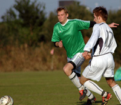 |
|
Sala's Toby Long races Stu Anderson for the ball. |
Misato Sun 20th November. Billed as a relegation scrap between two sides who had started the season in less than impressive fashion, Sala's preparations were thrown into disarray by the apparent disappearance of their centre back Clarkey. After it was determined that the lanky Scotsman had last been seen having an indepth conversation with the bottom of his "daijoki", arrangements were made for a makeshift defense. The able Yusuke stepped into the centre back role and proceeded to fill the big man's shoes with distinction.
No one knew quite what to expect from a Shogun Knights line up featuring more new faces than American Idol. In fact their right midfielder, sporting a pair of white sneakers with grey business socks, was booked early on for a fashion violation. more ...
Dhugal Bedingfield
YCAC Climb to 2nd Spot
YC&AC Sun 20th November. YCAC climbed to 2nd place in the league standings with a comfortable 3-0 win thanks to some clinical finishing over a toothless Jetro side.
Selecting the team at YCAC is never an easy job. Selecting the squad is easy, but team selection usually depends on who from the squad has turned up in time to play. This week was no different for stand in skipper’, Phil (Alan Ball) Denham. Ten minutes to KO and only 10 to choose from and not a goalkeeper in sight. At KO YCAC managed to scrape the bare 11. more ...
D.Hart.
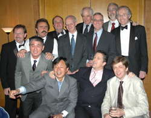 |
|
Members of the original BFC team from 1980 reunited. |
BFC Reach Historical Milestone
On Saturday, 19th November, at the illustrious St. Lukes Tower in Tsukiji, the British Football Club celebrated having played football for a quarter of a century in Japan - making BFC one of the oldest teams playing in the Tokyo Metropolis League.
100 suited and booted people, including a host of players from the past, attended the event to pay tribute to the club's founder, the honorable Gordon Liversidge and all the captains and organizers who have selflessly continued Gordon's legacy over the past 25-years. The club also enjoyed a tour to Thailand earlier in the year to commemorate reaching this remarkable milestone.
TML
AFC Struggle to find Highland Games Form.
| 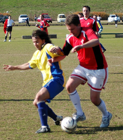 |
|
Andy Drought (L) & Jeff Cabott battle for the ball in the close encounter of AFC Wanderers vs WallStreet Clash. |
YC&AC Sun 20th November. After hammering out a draw in this fixture last season, both teams arrived at Misato with heightened expectations. AFC brought a revamped squad brimming with confidence after their Highland Games triumph, whereas in two league fixtures Wall Street Clash had promised much in terms of performance, despite a paltry return in terms of points.
Right from kick-off, play tended to rage around the centre of the pitch. Sustained periods of possession for either team were few and far between; a congested midfield meant little time on the ball and there were few passing sequences to entertain the two spectators and passing dog-walkers. more...
Count Zero
Geckoes Get Tough
YC&AC Sat 19th November. The Welsh connection secured the Geckoes 3 points against KGFC at YCAC with a solid victory on a beautiful late autumn day.
This was the first encounter between the Geckoes and KGFC and the Geckoes were expected to be tested by KGFC’s intricate passing game. KGFC were not discouraged by the fact that they were a man short and battled hard all game. more ...
SJ
Jets Continue Winning Streak
Hachioji Park Sat 19th November. The unbeaten Saitama Jets survived a second-half comeback to register a 5-2 victory against the British Embassy, their 3rd successive victory against the men in red.
The Jets started well against the 10-man strong Embassy, attacking with the verve and pace that have helped them rise to the top of Division 2. Gildart and Loren were looking sharp, and Sasaki, Keating and Garner were pulling the strings in midfield. The first goal came after Rob Keating's shot was blocked by the keeper, and the hungry Ryan Loren followed up the rebound. . more ...
GG
HIBS Drop First Points.
 |
|
Daisuke Ogawa heads a free kick towards Hibs goal, eluding Hitoshi Ono at the back post for the opener. |
YC&AC Sun 6th November. The gap between the Hibs and rest of the field has narrowed in recent weeks. Although not on the table it certainly seems to have narrowed on the field. After a sparkling earl season run of form when 5 goals a game was the norm, the Hibs have scored only 2 goals in their last 200 minutes of football. In truth the YCAC probably deserved all 3 points in this bruising encounter on a bumpy YCAC pitch.
Right from kick off the Hibs were under pressure as YCAC dominated in most areas. The Hibs spoke before the kickoff about not giving away fouls around the edge of the area because of the danger presented by Damian Hart. However they soon ended up doing the opposite and gave away foul after foul in the Hibs’ own half more...
BC
Swiss Kicking Themselves...
Big Circus Sat 12th November. Both teams were left to rue the missed opportunites of a pulsating match, out in the mountains of Hon Atsugi, which finished in an unbelievable 0v0 draw.
Last years champions looked sharp from the start, and struck the bar with 2 long(ish!) range shots in the first 5 or 10 minutes. Another drive from the edge of the box brushed the paintwork minutes later and it seemed that Sala had their hands full. more ...
RC
Jaffa Volley Downs AFC.
Hachioji Park Sat 12th November. Following their first defeat of the season by top of the table Saitama Jets, Barbarians were looking to quickly get back on winning form and returned to the same ground a week later to take on AFC. more...
Richard Carden
Celts Go Marching On.
YC&AC Sat 12th November. Four wins on the trot now for the Celts as they continue their push for promotion to Division 1 of the TML. Still a long way to go and judging by this performance still a lot of work to do but getting results while not playing your best is always a good sign. more ...
DZ
SalaSid Thwarts YCAC.
 |
|
A trademark 'Damo' free kick heads for the top corner, only to be tipped over by Sala's new Veteran Keeper. |
YC&AC Sun 6th November. Sala enjoyed another awayday in Yokohama on Sunday. Their 4th visit ended with their 3rd win and, the other game drawn, they remain the only opponent that YCAC hasn't beaten in TML action.
With a decent 14 man squad available and confidence high after dispatching a strong BFC side the week before, YCAC would ;surely make Sala wait at least 1 more week before recording their 1st win of the season. It looked that way at times, particularly during a YCAC purple patch leading up to HT but chances came and went and it was still all square at the half.. more from YCAC...
Steve Taw
And they say lightning never strikes twice…Doug Lee’s second goal for Sala was also his second from inside his own half.
Following on from last seasons memorable 50 yard header, comes this seasons 60 yard shot, with Lenny claiming the assist (and who can blame him) more from Sala...
Roddy Charles
'Pele' Goal Takes Hibs 7 for 7.
Big Circus Sat 5th November. As both clubs had strengthened their squad in the off season and been winning games and not conceding goals this fixture looked like a tasty one. The Hibs soon started to press and it was that man Keita who charged down a clearance (with his face) and found himself one on one with the keeper in no man's land 18 yards out. more ...
Bevan Colless
On-form Jets Repel Barbarians.
Hachioji Park Sat 5th November. TML Division 2 leaders Saitama Jets sneaked past the previously unbeaten Barbarians 2-1 thanks to a second-half winner from Nate Gildart. Things started badly for the high-flying Jets when a fast Barbarians break down the left within the first couple of minutes saw their striker find acres of space, and finish comfortably past Jets keeper Fraser Gould. more from JETs...
GG
Fresh from 2 victories in the TML, sandwiching a further victory in a non TML game, Barbarians were feeling confident and hoping to extend their winning streak to 4 games. Playing top of the table Saitama Jets, undefeated in their opening 5 games was always going to be tough and bound to produce some fireworks in this Guy Fawkes day clash. more from Barbarians
Richard Carden
BEFC & Santos Share the Spoils.
YC&AC Sat 5th November. BEFC avoided another Division 2 defeat by coming from behind twice at YCAC to draw with new TML outfit Santos. Santos went ahead just after the ten minute mark when their #18 smashed home a midfield through ball. BEFC leveled almost immediately when striker Steve Lidbury crossed from the left for Satoshi to nod home on the goal line.
BEFC played some fine football after the break but it was Santos who edged in front again on the hour. It took a Simon Woolhouse header late on to deny Santos their three points and BEFC could even have nicked a winner in the dying minutes, but were denied by some great goalkeeping and poor finishing again.
Santos are starting to find their feet at last in the division and play some fine football at times. BEFC are now starting to score again and will be hoping to build on this result, but remember, their next fixture is away to the in form Saitama Jets. We’ll just have to wait and see.
Blip Pilot
October 2005
AFC Victorious at Highland Games
 Makuhari Sun 30th October. AFC silenced all the big guns when they fought their way to a well earned victory at the 23rd Highland games. Beating BFC 1-0 in the finals of the 7 a side 1066 cup, AFC finally got some silverware to put in their cabinet and incentive to fight their way up in Division 2. IThe Magellan Cup, 6 a side masters tornament was won for the 2nd year in a row by Vagabonds masters, beating the French masters in the final. more...
Makuhari Sun 30th October. AFC silenced all the big guns when they fought their way to a well earned victory at the 23rd Highland games. Beating BFC 1-0 in the finals of the 7 a side 1066 cup, AFC finally got some silverware to put in their cabinet and incentive to fight their way up in Division 2. IThe Magellan Cup, 6 a side masters tornament was won for the 2nd year in a row by Vagabonds masters, beating the French masters in the final. more...
TML
Hart Hits Rocket to Fell BFC.
YC&AC Sat 29th October. The match up Saturday between YC&AC1 and BFC, both undefeated so far, was an early season test for both talented teams.
Play was spirited throughout as both teams' defenses came out strong and solid. Nothing further got past YCAC defenders, Damian Hart, Nicholas McDonald, Dickie Philo and Kevin Morgan, or the goalkeeping of Gary Hodgson. BFC's punishing defense was impenetrable too, led by experienced Leigh Manson, Ryo Yasunaga, and Dave Long and Jon Best. more...
Joe Takeda
Celts Squeeze Past YCAC 2nds.
YC&AC Sat 29th October. YCAC 2nds were once again edged out of the points with another 3-2 loss after their hard fought draw last week, Celts moved up the table as they finished their chances well and got their second victory in a row. more...
Blip Pilot
Hibs Push Further Ahead.
St Mary's Sat 29th October. The Tokyo hiberninan had not had a league game in 3 weeks and were wary of the tricky Jetro who had drawn with both the Hibs and Swiss last season. The match began well for the Hibs with Yama almost scoring within 10 seconds. Yohei Ohta then thumped one from outside the box that the Jetro keeper could only knock up into the net. A Tomo shot was deflected into the net by Keita and Yama made it 3-0 inside 20 minutes. The match then dropped down a gear as chances were spurned on both sides. The Hibs are happy to take the 3 points and move on to the next round against a revitalised BFC.
Bevan Colless
Stoneds Edge BEFC in Rain Soaked Thriller.
YC&AC Sat 29th October. A very wet and skiddy surface played host to a classic TML 2nd Division fixture on Saturday, with new boys Stoneds walking away with the points. The match started brightly enough for the BEFC boys, unlike the weather, as Kotaro, Silvano and Mike Yeomans tore the Stoneds defence apart on the left side of the park and should have been two or even three goals ahead after the first fifteen minutes. more...
Blip Pilot
BFC Save Best Til Last.
Hachioji Park, Saturday 22nd October. Under an October Manchester sky at the Hachioji ground, the pre-match kick in was going well. Shots predictably flying off target, mis-hit crosses, fluffed ball control, headers pinging off into space. Suddenly a ball swung in perfectly from Wiganer Neil to be headed firmly into the net by Evans. The man from Kenya was momentarily stunned, this was no ordinary ball, this ball had been pumped to the max and now had the feel of a heavyweight medicine ball. He dusted himself down, and got straight back to business. In a funny kind of way, this embodied the BFC never say die spirit today.. more from BFC...
Dave Long
Sala slumped to another TML defeat on Saturday, one which leaves them way down the table with only one point from three games.
Things started well enough, when after a turgid opening twenty minutes, Toby’s determination and skill in the middle of the park freed Dhugal through the middle. The Australian is not known to pass up one on ones with the keeper, and this was no exception, clipping the ball past him from 18 yards... more from Sala...
Roddy Charles
Shane Hold Off AFC With 1st Half Strikes.
Big Circus, Sunday 23rd October. A Sunday evening encounter in the Kanagawa mountains saw Shane seeing off a strong challenge from AFC. The only victory AFC recorded in the league last season was a 3-2 win over Shane which was still very much fresh in the memory as the Shane felt they threw away the 3 points in the last 5 minutes of that game.
With a full compliment of players to choose from this evening the stand-in Shane manager had an unusual selection headache, the usual one being filling 11 shirts with a linesman a bonus.. more...
PM
YC&AC Battle Past Knights.
YC&AC Sunday 23rd October. YCAC1 eased past a plucky Knights side in the Autumn sunshine at YCAC on Sunday Lunchtime. 3-0 down at HT, the Knights might have been forgiven for rolling over but to their credit they stepped up their running and tackiling and harried YCAC right up to the final whistle. A Genki Rasmussen header was the only addition to the scoring as the home team ran out 4-0 winners. more...
Steve Taw
YCAC 2nds Pick up First Point.
A beautiful day at YCAC, with Fuji-san looking splendid in the Autumn sunshine and temperature a balmy 20 degrees. There can't be a better place to play football when the weather is like that. YCAC were a little shorter of players than the email response had suggested, but still a good 13 or so. Nice to see Paul Wood and Tim Williams back. And always a pleasure to play in front of Peter Pauli in goal! more...
Steve McKie
Swiss Make Hard Work of KGFC.
YC&AC, Saturday 22nd October. The Swiss, still seeking to find some consistency in terms of line-up and playing style, came up against recently promoted but struggling KGFC. The game started slowly but KGFC showed off its skill in midfield by moving the ball around nicely from side to side, they had trouble getting by the Swiss back four and were limited to shots from distance which didn’t trouble Peter in goal. Coming back the other way, KGFC seemed to overload on attack and left themselves vulnerable to counter attack, willing to trust a great deal to their center back – supposedly of professional stock. KGFC did have the occasional corner as well but the clear height difference for the Swiss meant high balls did little to trouble the Swiss back 4. more...
Capn Kirk
Geckoes Overpower Resilient Jetro.
Hachioji Park, Saturday 22nd October. Wall Street Geckoes came away from Hachioji park with all three points, after a superb team performance over Japanese side Jetro. But by no means was it a one-team affair, as the Geckoes were forced to battle hard for victory against their skillful opponents. In the end though, it was the physically stronger team who would finish victorious. more...
PE
Jets Down Courageous Dutch.
Hachioji Park, Saturday 22nd October. The Saitama Jets eventually got past the brave Dutch resistance at Hachioji Park, notching up a 4-0 win.
The game, however, was not as easy as the scoreline suggests. At kick-off time, the Dutch had only managed to assemble 6 men. When the 7th arrived, the Jets lent the men in orange a spectator, so the game started 11 vs 8. Confident pre-match talk of scoring double figures soon proved premature, as a combination of stout Dutch defending and loose final passes and shots from the men from Saitama saw the first 30 minutes remain scoreless. It looked like it would take something a bit special to break the deadlock, so up stepped the Jets midfield motormouth Gary Garner. more from JETs...
G Garner
Swiss Breathe Sigh of Relief
Hachioji Park, Saturday 15th October. BFC and Swiss Kickers both lined up with under strength squads at Hachioji Park on Saturday, 15th October, due to injuries, illness and work commitments, however even on their worst days both teams have a veritable selection of quality players to choose from to do more than an average job.
On the back of two wins from two games and with the Swiss having been somewhat humiliated by Hibs in the weeks prior to this game, BFC were looking for a result from this fixture. Equally the Swiss were keen to get their season back on track and knew that a convincing win over BFC would go a long way to silencing their critics. more...
TML
Babas Come from Behind to Maintain 100% Record.
 |
|
John Stokes kneels before YC&AC2's Captain, Ryuji Matsumoto, though it was the latter who's side yeilded. |
YC&AC Saturday 15th October. Barbarians had started the 2005/06 campaign in an unusual style, with a win in the first game and were looking to retain their 100% record in glorious conditions on Sat afternoon at YCAC. Line up for the Barbs was Fred in goal, solid back line of Fergs, Seno, Hideki & Steve, 5 man midfield featuring Kaneko, Clark, John Stokes, Alex & Muramoto with Danny up front as the lone strike force. Hiro was our one sub who would come on for Kaneko mid way thru the first half.
more from Barbarians...
Richard Carden
Barbarians finally ran out 3-2 winners over YCAC 2nds in a good-natured but competitive game at Yokohama.
YCAC 2nds, in only their second season in the the TML, are looking to improve on their performances last year. more from YCAC2...
S. McKie
Jets Limp Past Spirited Wanderers.
Hachioji Park, Sunday 16th October. Saitama Jets keeper Fraser Gould went from villain to hero as the Jets laboured to a 3-1 victory over the AFC Wanderers.
The Jets had spanked the Wanderers 5-0 and 6-1 in the last two games between the teams, so were hoping for an easy win, but some gritty play from AFC and some profligate finishing by the Jets forwards made this a tight match. Gould gave the Wanderers an early present, and his team a handicap, swinging his boot wildly at a weak shot, missing, and watching the ball trickle painfully and slowly into his goal. more from JETs...
G Garner
A sodden Hachioji park pitch saw the perrinial underdogs AFC take on the in form and improving Saitama Jets. The two teams certainly know a bit about each other, hostilities, banter and the odd handshake were guaranteed.. more from AFC...
PM
YC&AC Show They Mean Business
 |
|
The towering figure of Steve McKie watches as Phil Denham & Nacer Lahiani hold hands and practice their tango. |
YC&AC Saturday 15th October. YCAC1 finally kicked off its TML season with a convincing 3-0 win over an unusually subdued French side on saturday.
Having waited so long for the chance to play, the actual start was something of a damp squib for the YCAC boys. 4 dropouts midweek and scrounging for subs, a linesman and even a ref before KO deflates the preseason bubble just a little.
Ref Pietro again had trouble with his watch, 2 Half time arrivals and 1 overrun night game finishing in the dark in his last 3 YCAC games. Thanks to BigSteve Mckie for stepping up to ref the 1st 40 and ref very well too. The 57 Old Farts that run the League, for readers that recall Will Carling, might want to wake up to the obvious fact that todays Ref needs to be 6'4" 17 1/2 stone and conversant with modern man management techniques in dealing with player histrionics. "You're going to need to have this whistle surgically removed if you don't shut the f*** " is the blindingly obvious way to deal with someone whos in your face with "Excuse me for asking but how long to go, Ref?" more...
S. Taw
Hibs Take French from the Derrière
Big Circus Saturday 8th October. Another good game, very similar to the BFC v France game. France took an early lead against a very strong wind with a cracking shot from Julien Sepheriades that swerved and dipped over the keeper. France then looked fairly comfortable for the rest of the first half and all set for a half-time lead with the wind behind them in the second half. But Hibs sneaked one just before half time.
The wind was not as strong in the second half and neither side dominated, but Josh Shirmer scored a screamer from well outside the area after 15 min, then Keita Narama found himself one on one with the keeper with 5 minutes to go as France left a few gaps at the back pressing forward for the equaliser. more...
TML
Shane Brought Back to Earth by Babarians
 |
|
Andrew Ferguson enjoys the chance to slide in on a grass pitch in Barbarians win over Shane FC . |
Misato Sunday 2nd October. Barbarians finally got their TML campaign off the ground in baking heat at Misato.
Shane came into the game on the back of handing out a 7-0 humping in their previous game while Barbs had been unable to play their previous 2 matches due to rain.
It was always going to be a close game with the 3 previous encounters between the 2 teams ending in a win a piece and a draw. more...
Ferg
Before the above match, Vagabonds were handed 3 points on a plate by Maritizio FC, who only managed to turn out 6 men for their match.
The players present went ahead with a games using borrowed bodies playing out a 2-1 win for Vagabonds.
Later in the day, BEFC started their return to Div 2 football with a fortunate 1-0 victory over WallStreet Clash. The Embassy held onto the lead after one of the Clash players shinned a clearance into his own net after only 15 minutes. Both sides came close in the 2nd half but it was to be the only goal of the game.
TML
France FC Topple Newcomers
|
Taka fires in a 1st half shot at the KGFC goal, he scored the winner late in the 2nd half! |
Misato Sunday 2nd October. The French squad was on the turf on a bright and hot day in Misato facing off against the newly promoted KGFC. The first half saw a good Japanese opposition taking charge of the play. Very active on both wings, indeed it was from the left that the danger came - Ally parried the ball nicely, only for a KGFC player to recover the ball and stroke a nice shot home from 10-meters. 0-1 –Time for a break and a drink. We had the second half to get back in the game and show our true colours, which we did. A much more active and efficient French squad created some threatening chances. Aziz got the ball after a very nice pass and after a dribble, he beat the keeper from close range to score his debut goal for the French. 1-1. After a poor clearance from the KGFC defense, Taka received the ball and put it straight back in le mixeur (the mixer) the rebound caught the keeper by surprise and the French went 1-ahead. KGFC did thrust forward towards the end of the game, however the French squad held on to their lead with some fine saves by Ally and good all round work from Man of the Match – Taka. We did not play our best football on that hot day, but the result is what matters and we got an important second win to stay afloat in the league race.
Le FM
Hibs Keep Momentum Going.
St Mary's Saturday 1st October. The Hibs added another scalp to their early season collection as they accounted for The Wall Street Geckoes in a spirited encounter at St Mary's. The Geckoes were coming off a comprehensive win over the Shogun Knights and looked to have strengthened their squad over the summer, as the arrived with a big squad ready to play. more...
Bev
September 2005
Geckoes off the mark
 |
|
Simon Bromwell gets a tug as he tries to leave the 'Shogun Knights' defence behind. |
Hachijoji Sunday 25th September. Wall Street Geckoes claimed their first three points of the season with a convincing win over newly promoted (and newly named) Shogun Knights. Gino Dilberto opened the scoring with a powerful header on the 15th minute and WSG never looked like giving up the lead after that. A lovely finish from Kazu Kikuchi after some patient build up play saw the Geckoes going into the interval 2-0 up. Soon after the break new midfielder Peter Exton opened his account for the team with a neatly taken goal and Phil Stroud ensured that the Geckoes would take all 3 points with a good finish.
SK stuck to the task at hand and were rewarded with a scrappy, but deserved goal late on in the 2nd period from David Hales. Quentin, the ref, had a very good match, and his sensible decision making kept the game flowing and prevented any fare ups that have previously marred this fixture.
GAZ
Vagabonds Slow JETS Advance.
Hachijoji Sunday 25th September. The Saitama Jets and the Vagabonds both had to settle for a 2-2 draw at Hachioji Park in a game where the balance shifted several times.
The Jets, fresh off the back of two good league victories, got off to a dream start. Gary Garner threaded a delicate ball through to forward Ryan Loren, who shrugged off the defender before rounding the keeper and slotting home after about 5 minutes. more...
GG
Maritizio Held by Newcomers Stoneds FC
|
Vernon Gill give away a free kick as he welcomes Stoneds FC's captain Kurata Aoyama to the TML. |
Monday 19th September, OiFuto. Newcomers Stoneds FC held Maritizio to a 1 all draw in their first TML outing.
Maritizio were the first to strike, as a corner was met by a fierce, near post volley, giving the keeper no chance. The lead only lasted a few minutes though as mid-way through the first half, the Maritizio keeper was caught out of position and could only parry a Stoneds half volley into the inside of the side netting. 1-1
The 2nd half had more action than the first and both keepers were forced into action on numerous occasions. Hidenori Yoshioka, Stoneds midfield playmaker, showed he will be a handful for Div 2 defences as he made countless chances but there were to be no more goals.
TML
AFC Show New Resolve
September 18th Big Circus. Andy Watanabe led AFC Wanderers to only their 2nd victory in the TML, having won just 1 match in season 2, by taking advantage of a Vagabonds team in disarray.
A 1st half goal by Olly Worsfold was enough to give the Wanderers all 3 points, although a few more good chances were squandered. At the other end, the AFC goal was rarly threatened as Vagabonds struggled to link up or create anything in the middle. more...
AW
Jets Down Luckless Celts
September 13th Tennozu Isle. The Saitama Jets began the third TML season showing a resolve to continue improving, and ultimately win promotion to the TML First Division. The campaign kicked off in Tennozu against the Kanto Celts, who the Jets were fortunate to defeat in a come-from-behind victory last season.
For more click here.
GG
BFC Display New Found Resolve
September 12th Big Circus, Hon Atsugi. Partly due to new summer signings and partly due to that great British resolve, BFC scored two second-half goals to defeat an energetic France FC team who themselves managed to score one goal with the very last kick of the game. Fluid play, combined with a new-look hardened midfield and back-four, with the welcome inclusion of the ever-industrious James Morson and hard-man Leigh Manson, saw the BFC break the French defensive line time and time again in the first half, with some dangerous runs from the BFC front men, who seemed to have found and extra yard of pace over the summer. However, some stout defending by the French kept the score equal at half-time. 15-minutes into the second half and it was a text book header from former Shanghai Shooter Jon Best, following a pin-perfect cross, that sent BFC into the lead. Mid-way through the second half France FC became ever-more industrious stringing together some good passes, but failing to hold the ball up in attack, or hit the target. BFC striker Jon Day increased the lead for BFC, with 20 minutes still on the clock, when the ball broke free from a throng of players and he volleyed home from the edge of the 6-yard box. In the final 10-minutes the French surged forward looking for a break and a sweetly struck shot just inside the area forced a miraculous save from new BFC keeper Jyurki ....... France FC finally found the back of the net when BFC failed to clear their lines following a corner and the quick-witted France FC striker slotted home from a tight angle, but the final score line saved the blushes of the BFC defense. All in a great game played in fantastic "TML spirit" - hard but fair. click here.
TML
Hibs Bag a Bunch
New signing Tomomitsu Kuni (of ex-BFC fame) scored the opening two goals for Tokyo Hibernian FC and set-up the third, in the space of 12-minutes, in a drumming of newly promoted Shogun Nights FC (formerly Nova FC) who received a rude awakening to 1st division football with a 6-1 loss in their opening match. Hibs throughout turned defense into attack with some precision football and their movement off the ball and all-round route-one football suggests that they are gunning for for the top-spot having been pipped at the post by the Swiss last season. Shogun Nights FC, to their credit, looked dangerous in the last third of the pitch, with both strikers not afraid to unleash and keep renowned shot-stopper Hitoshi Ono on his toes. However, Shogun Nights FC failed to consistently hold on to the ball in midfield and for the best part were chasing Hibs shadows around the park, especially in the first half when they conceded 5. click here.
TML
All Bark & No Bite as Jetro Stall Sala
September 4th OiFuto Dai Ni. There is an old saying in Japanese, which states roughly that if everyone accepted apologies, there would be no need for the police. Sala midfielder Stephen Brooke-Smith came to understand this sentiment on Sunday. Upon rather churlishly flicking the ball away after the whistle was blown for a Jetro free kick, he found his apologies falling on deaf ears. Kazu, the man in black, reached for the yellow card and after only 4 minutes it was quite clear, TML Season 3 was well and truly underway. more...
TML
BFC HOLD OFF GECKOES
September 4th OiFuto Dai Ni. A goal early in the 1st half was enough to secure victory for BFC against a determined Wallstreet Geckoes team who are looking to rise from mediocrity this season. A new-look BFC team looked strong at the back and dangerous on the break, however Geckoes defended resolutely and will feel that had they finished their early chances the 3-points would've been theirs. Geckoes will refuse to be rolled-over by any of the big teams in the 1st division and this gritty, tenacious and industrious team may even cause one or two upsets as the season progresses. For more on this game click here.
TML
 SWISS START ON WINNING NOTE
SWISS START ON WINNING NOTE
September 3rd OiFuto Dai Ichi. Swiss Kickers started their 3rd season with TML the same way as they left off; winning!
Last years Div 1 joint top scorer Karl Hahne, took the first of 3 first-half goals that were enough to see them to a 3-1 win. The French were no pushovers though, creating as many good chances as the Swiss.
Swiss' keeper Peter Pauli was forced to make some good saves, including tipping a great shot from Etsushi Yoshikoshi over the bar. It took great volley by Julien Sepheriades to finally beat hime looking to set up an exciting second half.
Although more chanes did arise, it proved to be the last goal of the game as the Swiss went into that all too familiar spot for them, the top of the table - more...
TML